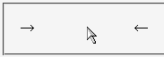

visibility:hidden; を指定して非表示にした要素には、:hover擬似クラスの指定内容が効かない。
<style type="text/css">
a:hover {
visibility: visible;
}
</style>
<p>→<a href="..." style="visibility:hidden;">Mozillaバグリスト</a>←</p>
→←
2つの矢印に挟まれた部分に非表示のリンクがあります。リンクにマウスポインタなどを載せたときにa要素の文字列が現れることが望まれます。
Netscape7.1標準モード
mozilla.org Bugzillaでは以下の項目が該当します。